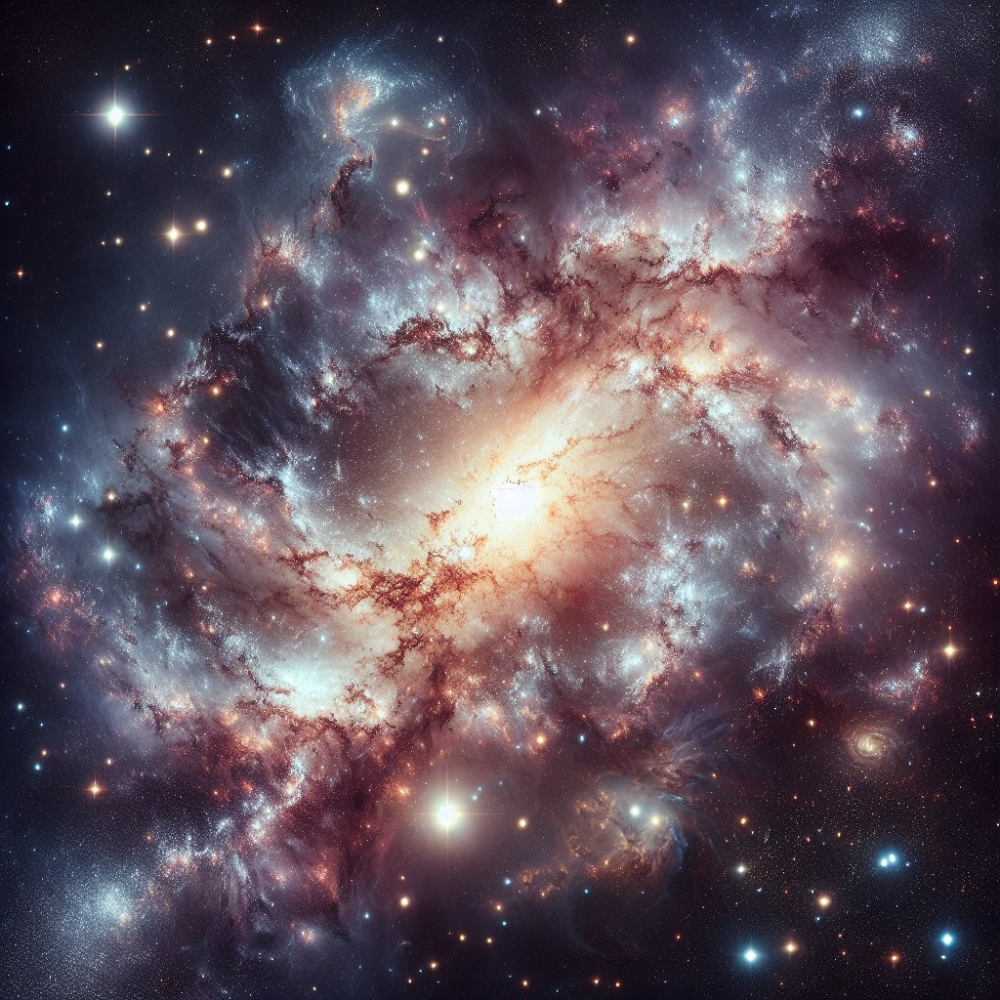

Гала́ктика — гравитационно связанная система из звёзд, звёздных скоплений, межзвёздного газа и пыли, тёмной материи, планет. Все объекты в составе галактики участвуют в движении относительно общего центра масс
Число галактик, доступных наблюдениям в крупнейшие телескопы, достигает десятков миллиардов. Несмотря на исключительное многообразие внешнего вида, большинство галактик всё же можно объединить в несколько основных типов: эллиптические (E), спиральные (S) и неправильные (Ir).
К эллиптическим галактикам относятся те из них, которые имеют вид кругов или эллипсов. Их яркость плавно уменьшается от центра к периферии. Никакой внутренней структуры у этих галактик нет. Наблюдения показывают, что эти галактики не вращаются, в них очень мало газа и пыли, поэтому в них новые звёзды не образуются, они состоят в основном из старых звёзд. Массы самых крупных эллиптических галактик достигают величины 10^13М .
Спиральные галактики состоят из ядра и нескольких спиральных рукавов, или ветвей. У обычных спиральных галактик (S) эти ветви отходят непосредственно от ядра. У пересечённых спиральных галактик (они обозначаются SB) ядро пересекается по диметру поперечной полосой — перемычкой (баром). От концов этой перемычки и начинаются спиральные ветви. Так, одна из ближайших к нам звёздных систем — Туманность Андромеды — является спиральной галактикой, а галактика NGC1300 — спиральная галактика с перемычкой. Считают, что наша Галактика похожа на Туманность Андромеды. Спиральные галактики вращаются, в них много газа и пыли, которые концентрируются к плоскости галактики в спиральных рукавах, в них много молодых горячих звёзд спектральных классов О и В. Эти звёзды возбуждают свечение диффузных газовых туманностей, разбросанных вместе с пылевыми облаками вдоль спиральных ветвей. Обилие газовых пылевых облаков и присутствие в них голубых звёзд спектральных классов О и В говорят об активных процессах образования звёзд, происходящих в спиральных рукавах этих галактик. Массы спиральных галактик составляют от 10^10 до 10^12
К неправильным галактикам относятся те, у которых отсутствует чётко выраженное ядро и не обнаружена вращательная симметрия. Примерами неправильных галактик служат Большое Магелланово Облако и Малое Магелланово Облако — самые близкие к нам галактики, видимые невооружённым глазом в южном полушарии неба, вблизи Млечного Пути. Эти две галактики являются спутниками нашей Галактики. Специальный класс галактик представляют взаимодействующие галактики. Обычно это двойные галактики, между которыми наблюдаются светлые перемычки, «хвосты» и т. д. Из-за близкого расположения друг к другу их формы искажаются силой взаимного тяготения, которая вызывает приливы у каждой из них.